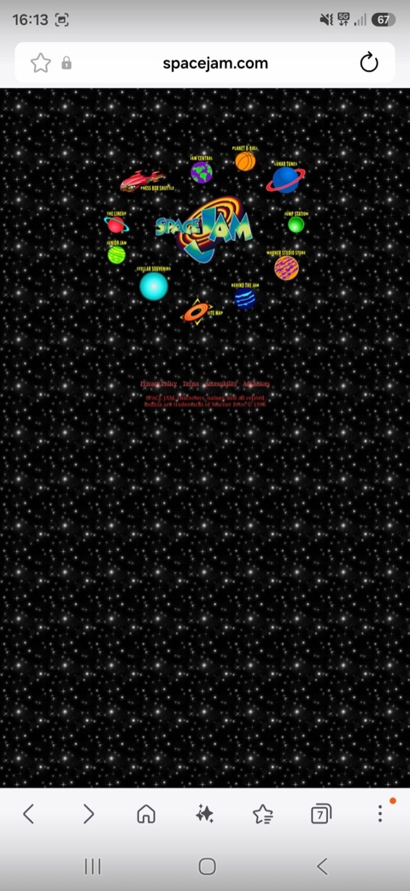
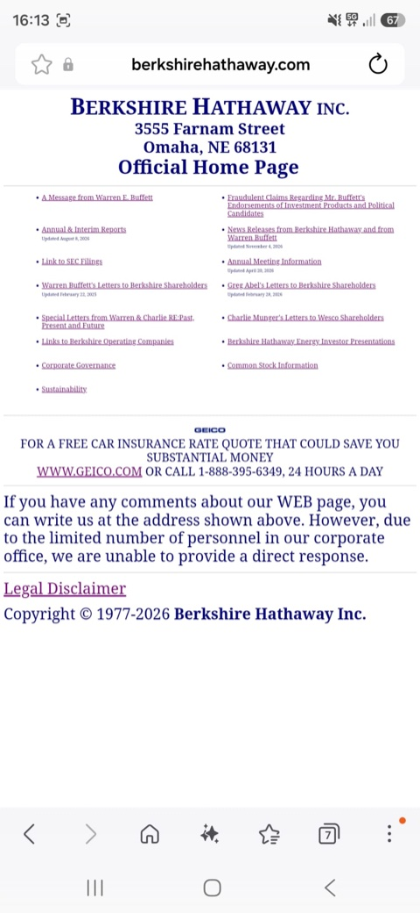

Why Does Mobile Layout Matter?
A website designed for desktop does not always work on a smartphone. Poor layouts can make content difficult to read and navigation frustrating.
1. Space Jam (1996)

The problem
A desktop website that never adapted to modern smartphone screens.
Why does it fail?
- Tiny text and links.
- Users need to zoom in.
- Large unused screen areas.
How could it be improved?
Use responsive layouts, readable text and mobile-friendly navigation.
2. Berkshire Hathaway

The problem
A traditional website with a layout that is not optimised for mobile devices.
Why does it fail?
- Links are too close together.
- Inconsistent text sizes.
- Navigation is difficult.
How could it be improved?
Improve spacing, typography and touch targets.
3. Key Takeaways
- Adapt to different screen sizes.
- Keep text readable.
- Make links easy to tap.
- Provide clear navigation.
Conclusion
A website should adapt to different screen sizes to provide a comfortable browsing experience. Responsive design makes content easier to read, navigate and access on mobile devices.